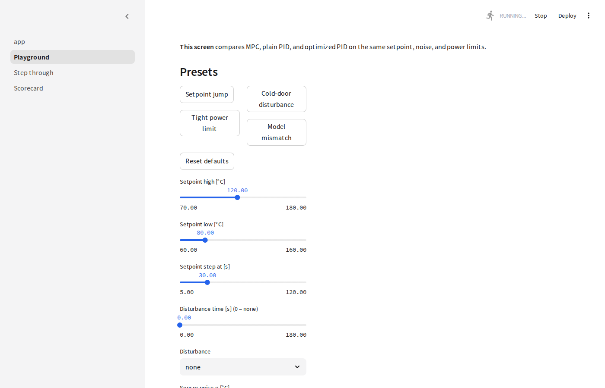
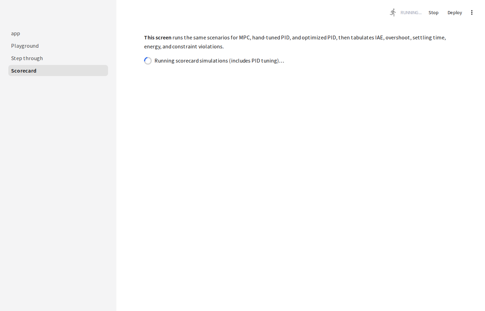

Model predictive control plans ahead. PID reacts after error appears — even when gains are optimized.
Each step: predict temperature, choose power, apply only the first move, shift forward.
Constraint violations (lower is better)
Setpoint tracking — settling time [s]
MPC keeps power feasible and reaches setpoints faster than hand-tuned PID. Optimized PID closes the gap on some metrics but still lacks preview — and plain PID breaks limits when the ceiling binds.

